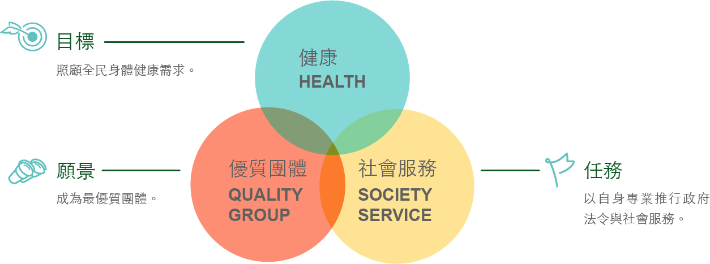
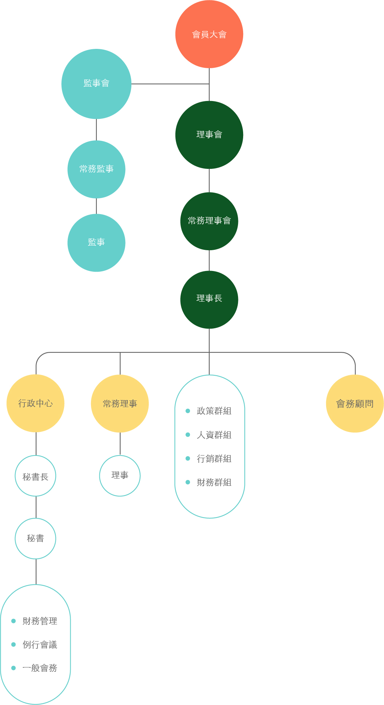

- 目標與願景
- 成為最優質的人民團體，能迅速有效地滿足社會的健康需求。創造物理治療師在整體醫療體系內之必要價值。
- 
- 大紀事
- Civil Rights Act
-
July 2, 1964
President Lyndon B. Johnson signs the Civil Rights Act of 1964, mandating equal opportunity employment, and complete desegregation of schools and other public facilities. It also outlaws unequal voter registration requirements. Although it would take years for these changes to take effect in communities around the country, the law is a monumental victory for the civil rights movement.
- Nobel Peace Prize
-
October 14, 1964
Martin Luther King Jr. is awarded the Nobel Peace Prize; at 35, he is the youngest recipient.
- Civil Rights Act
-
July 2, 1964
President Lyndon B. Johnson signs the Civil Rights Act of 1964, mandating equal opportunity employment, and complete desegregation of schools and other public facilities. It also outlaws unequal voter registration requirements. Although it would take years for these changes to take effect in communities around the country, the law is a monumental victory for the civil rights movement.
- Nobel Peace Prize
-
October 14, 1964
Martin Luther King Jr. is awarded the Nobel Peace Prize; at 35, he is the youngest recipient.
1964
1964
- 組織架構
- 本會由會員選出理事會與監事會，再由常務理事、常務監事選出理事長與監事長。另設置公共政策任務群組、人力資源任務群組、行政管理任務群組等三個任務群組，各司其職。
- 
- 組織成員
-
- 理事會
-
-
理事長：
楊政峯
-
常務理事：
鄭悅承、歐育志、朱世瑋、陳志明、蕭淳仁、黃劭瑋
-
理事：
陳貞吟、林士峰、江秀玲、許靜儀、徐瑞隆、關永基、劉雅棻、蔡瀚文、周雅惠、樊志成、張婉茹、藍雅音、卓宗成、邱炫瑋、林彥瑋、林嘉雄、王建富、黃元大、張天駿、謝妃雅、楊榮真、王菀宣、范袺雯、陳俞州、林盟傑
-
理事長：
-
- 監事會
-
-
常務監事：
王淳厚
-
監事：
廖清彬、施啟明、陳宏軒、范政弘、宗志豪、石旭生、黃博靖、呂文祥
-
候補監事：
李郡鳳、陳世銘、何逸軒
-
常務監事：
-
- 秘書處
-
-
秘書長：
楊博凱
-
會務秘書：
楊曼欣、劉育綺
-
產業研究員：
邱珮淇
-
秘書長：
-
- 工作群組
-
- 政策群組
-
政策長：陳志明
副政策長：林士峰
- 人資群組
-
人資長：蕭淳仁
副人資長：周雅惠
- 行銷群組
-
行銷長：黃劭瑋
副行銷長：劉雅棻
- 財務群組
-
財務長：歐育志
副財務長：徐瑞隆
-
- 會員公會
-
-
- 會員公會名稱
- 理事長
- 基隆市物理治療師公會
- 王菀宣
- 社團法人台北市物理治療師公會
- 陳志明
- 社團法人新北市物理治療師公會
- 楊博凱
- 桃園市物理治療師公會
- 黃國育
- 新竹市物理治療師公會
- 楊榮真
- 新竹縣物理治療師公會
- 辜千容
- 社團法人苗栗縣物理治療師公會
- 黃育璋
- 社團法人台中市物理治療師公會
- 許靜儀
- 社團法人彰化縣物理治療師公會
- 陳怡年
- 社團法人雲林縣物理治療師公會
- 李敬恩
- 南投縣物理治療師公會
- 莊志敏
- 社團法人嘉義市物理治療師公會
- 陳俊佑
- 嘉義縣物理治療師公會
- 關永基
- 社團法人台南市物理治療師公會
- 劉櫂緯
- 社團法人高雄市物理治療師公會
- 劉雅棻
- 新社團法人屏東縣物理治療師公會
- 竇文宏
- 宜蘭縣物理治療師公會
- 紀岳均
- 社團法人花蓮縣物理治療師公會
- 徐佳俐
- 社團法人臺東縣物理治療師公會
- 詹仲凡
- 金門縣物理治療師公會
- 張婉茹
- 澎湖縣物理治療師公會
- 藍雅音
-